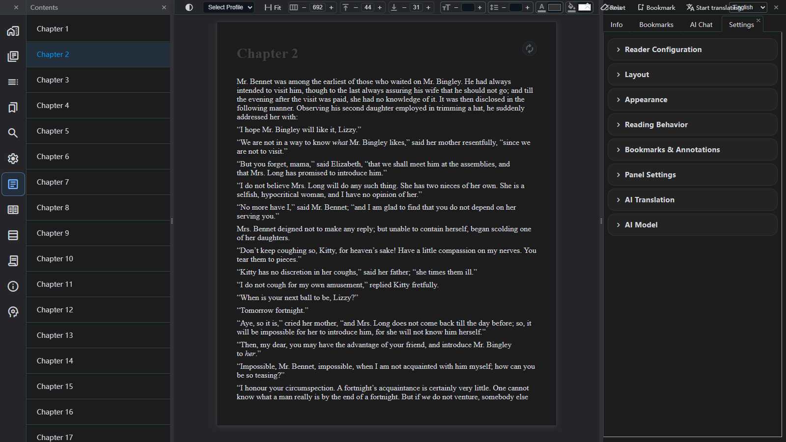
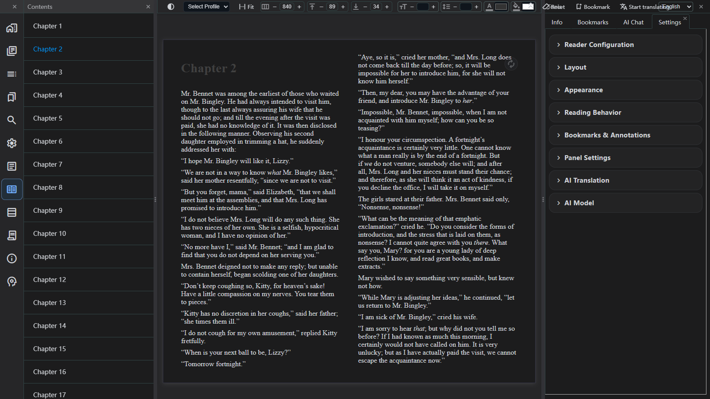
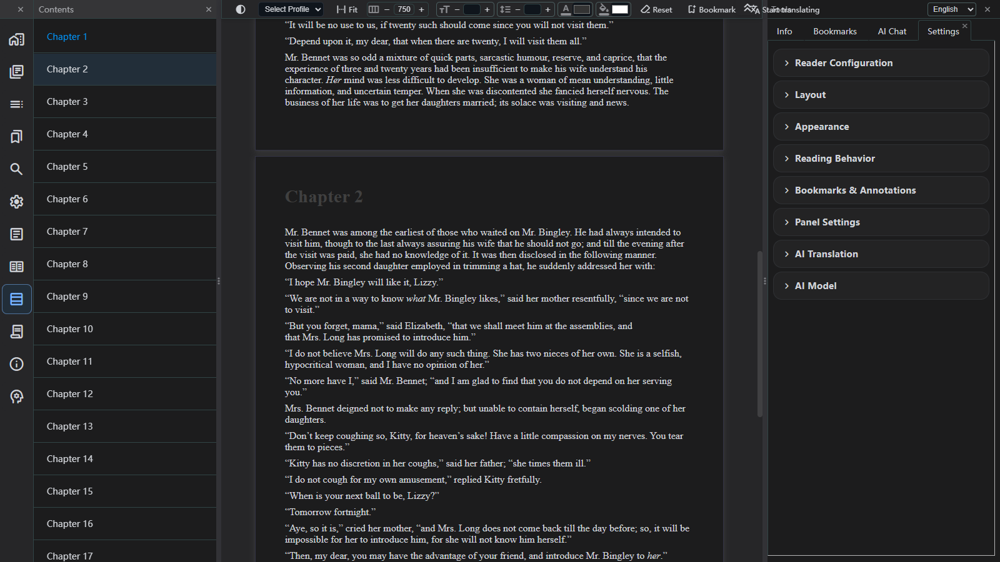
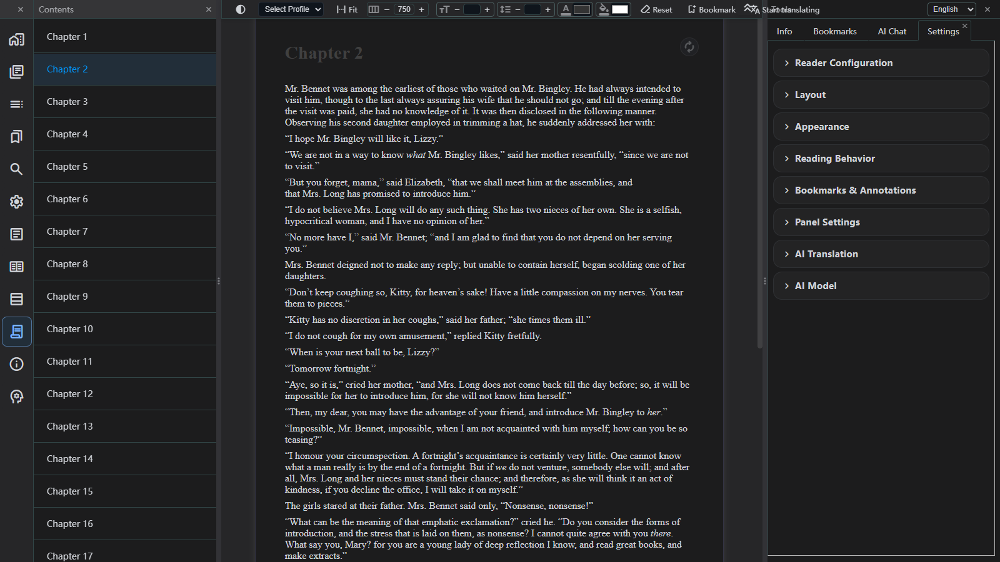

Reading Modes
The reader offers four layouts. They only change how pages are arranged — never the content of the book.
The four modes
| Mode | How it looks | Good for |
|---|---|---|
| Continuous | Scrolls through the whole book, showing several chapters at once | Long sessions, and readers who prefer scrolling up and down |
| Single Frame | One chapter at a time, scrolling inside that chapter | Working through chapter by chapter without left-right paging |
| Single Page | One page at a time, turned left and right | A paper-like page-turning feel |
| Double Page | Two pages side by side | Large screens, or seeing what comes before and after |




How to switch
- Open any book to enter the reader.
- Click Single Page, Double Page, Continuous or Single Frame in the left toolbar.
- The Layout section of reading settings has finer options, such as whether to move into the next chapter automatically at a boundary.
When you switch modes, the reader tries to keep your place. Converting between paged and scrolling layouts can land you a page away from where you were.